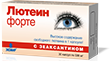

Задать вопрос производителю
ЗАЩИТА ГЛАЗ
ПРИ ИНТЕНСИВНЫХ НАГРУЗКАХ Усталость
ПРИ ИНТЕНСИВНЫХ НАГРУЗКАХ Усталость

Лютеин комплекс
Лютеин комплекс
УКРЕПЛЕНИЕ СОСУДОВ
ГЛАЗ Текст
ГЛАЗ Текст
Лютеин комплекс
Лютеин комплекс
ЗАЩИТА ЗДОРОВОГО ЗРЕНИЯ
НА ДОЛГИЕ ГОДЫ Текст
НА ДОЛГИЕ ГОДЫ Текст
Лютеин комплекс
Лютеин комплекс
СНИЖЕНИЕ РИСКА РАЗВИТИЯ
ВОЗРАСТНЫХ ИЗМЕНЕНИЙ ГЛАЗ Текст
ВОЗРАСТНЫХ ИЗМЕНЕНИЙ ГЛАЗ Текст
Лютеин комплекс
Лютеин комплекс
Группы риска:
Школьники и студенты
В последнее десятилетие врачи отмечают печальную тенденцию: все чаще у детей школьного возраста выявляются болезни органов зрения. Сложный оптический прибор, идеально приспосабливающийся к изменчивым условиям окружающей среды, глаз оказался не подготовленным к современным реалиям.
ПодробнееOn-line тест
Мы предлагаем пройти небольшой тест, который поможет легко и комфортно проверить остроту, контрастность и цветовосприятие вашего зрения.
Если по результатам теста Вы отметите ухудшение зрения, Вам следует обратиться к офтальмологу за дополнительной консультацией.
Где купить
Препараты можно приобрести в аптеках по всей России, а также в интернет аптеках